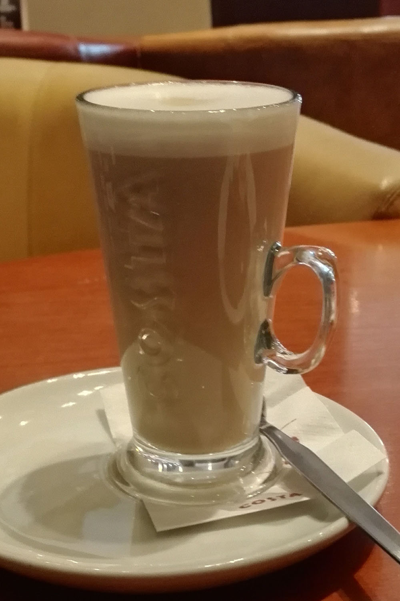
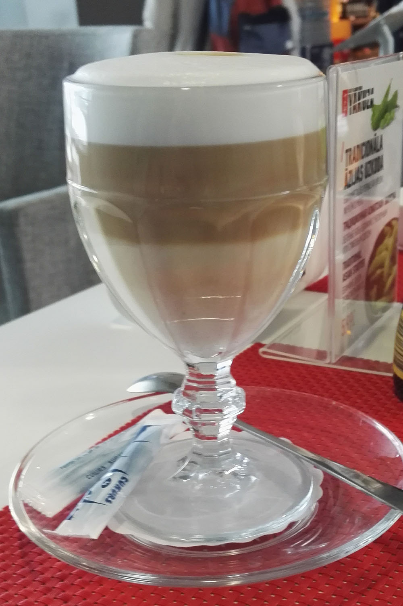

Kahvi maistuu

Kahvi maistuu edelleen

Kahvi maistuu aina

Tule nauttimaan hyvästä ruuasta ja laajasta juomavalikoimastamme tunnelmalliseen ympäristöön. Löydät meidät Pasilan aseman kupeesta, Ratapihantie 13.